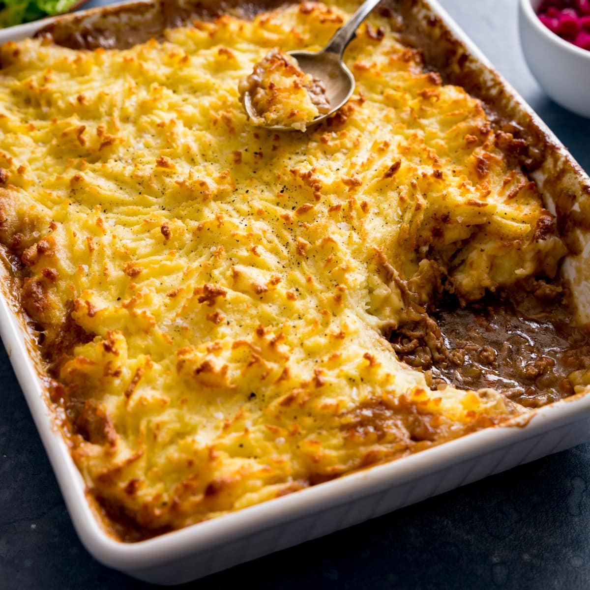

Home
Shepherd's Pie

Description
Mom used to make this for me in college. It is pure comfort food. If you can heat it long enough to where the mashed potato top becomes golden brown, you will not regret it.
Note- you can sub out the beef for an impossible option. Also, required for this recipe are the mashed potatos. Remember- you can never have too much butter.
Ingredients
- 1lb Ground Beef
- 1 Onion, chopped
- 2 Carrots diced
- Optional:2 Beef Boullion Cubes melted in boiling water- 1 cup
- Salt and Pepper to taste
- Mashed Potatoes
Steps
- Make Mashed Potato recipe
- Add above ingredients together in a bowl and mix
- Spread in pan- top with mashed potato spread on
- Bake at 350 for 10 minutes, then continue to check every couple minutes to verify top is golden brown
- Enjoy!